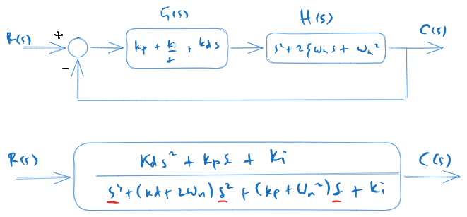
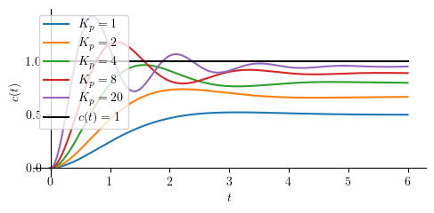
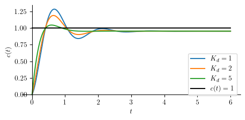
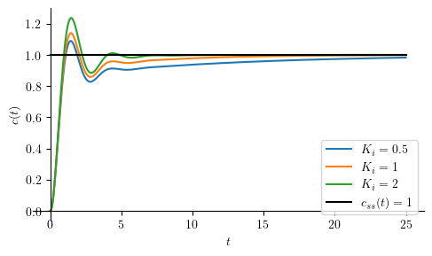

PID Control of a Second Order System¶
Preparations¶
Here we import all necessary libraries.
Show code cell source
from IPython.core.display import HTML
import numpy as np
import matplotlib.pyplot as plt
plt.rcParams.update({
"text.usetex": True,
"font.family": "Helvetica",
"font.size": 10,
})
from sympy import *
from sympy.plotting import plot
from mathprint import *
These are some variables that we are going to use:
\(t, s, \tau, \omega, \omega_n, \zeta\)
from sympy.physics.control.lti import TransferFunction
Kp, Ki, Kd = symbols('K_p K_i K_d', positive=True)
t = symbols('t', positive=True)
s = symbols('s', complex=True)
tau = symbols('tau', positive=True)
omega = symbols("omega", positive=True)
omega_n = symbols('omega_n', positive=True)
zeta = symbols('zeta', positive=True)
Let us define some helper functions.
def laplace(f):
F = laplace_transform(f, t, s, noconds=True)
return F
def ilaplace(F):
f = inverse_laplace_transform(F, s, t)
return f
def frac_to_tf(frac):
return TransferFunction(fraction(frac)[0], fraction(frac)[1], s)
System and the control equations¶

The diagram above corresponds to a unity-feedback loop with
and plant
Thus, the closed-loop transfer function is
After this, we will compute \(c(t)\), \(c'(t)\), \(c(0)\), \(c'(0)\), and \(c(\infty)\) where \(c(t)\) is the inverse Laplace of \(C(s)\).
From \(c(\infty)\), we can get the steady state output of the controlled system while \(c'(0)\) tells us the occurance of derivative kick in the controlled system (non-zero initial velocity).
H = 1 / (s**2+2*zeta*omega_n*s+omega_n**2)
G = Kp + Ki/s + Kd*s # PID TF
Q = factor(G*H / (1 + G*H)) # CL TF
Q = collect(Q, [s**3, s**2, s])
print("First-order system:")
mprint("H(s)=", latex(H))
print("PID-control:")
mprint("G(s)= ", latex(G))
print("The resulting closed-loop system:")
mprint("Q(s)=", latex(Q))
First-order system:
PID-control:
The resulting closed-loop system:
At this point, we can tell that the equations are already complicated, thus, finding some equations for further analysis might not be feasible. What we are going to do next is steady state analysis for several combinations of controller terms.
Second-order system with P-control¶
Qp = simplify(Q.subs(([Kd, 0],
[Ki, 0])))
mprint("Q_P=", latex(Qp))
For step response, we apply \(1/s\) as its input, perform an inverse Laplace operation to \(C(s)\) and obtain \(c(t)\) as the result. Finally, we compute the steady state-value for the output: \(c_{ss} = \lim_{t \to \infty} c(t)\).
cp = logcombine(ilaplace(Qp * 1/s))
cssp = simplify(limit(cp, t, 'oo'))
c0p = limit(cp, t, 0)
cp_d = simplify(diff(cp, t))
c0p_d = limit(cp_d, t, 0)
mprint("c(t) = ", latex(cp))
mprint("c'(t) = ", latex(cp_d))
mprintb("c_{ss} = ", latex(cssp))
mprintb("c(0) = ", latex(c0p))
mprintb("c'(0) = ", latex(c0p_d))
Our conclusions:
no derivative kick
smooth start
zero initial velocity
Next, we can write the steady state error as: \(e_{ss} = 1 - c_{ss}\)
mprintb("e_{ss}=", latex(simplify(1-cssp)))
Next, let us try with some numerical valuses.
omega_n_ = 1
zeta_ = 1;
Kp_ = [1, 2, 4, 8, 20]
Show code cell source
p = [plot(cp.subs(([zeta, zeta_], [omega_n, omega_n_], [Kp, Kp_[j]])),
(t, 0, 6), size=(5, 2.5), ylabel='$c(t)$', show=False, legend=True)
for j in range(len(Kp_))]
p1 = plot(1, (t, 0, 6), line_color='k', line_style=':', show=False) # unit-step
p1[0].label = "$c(t)=1$"
for j in range(len(p)):
p[j][0].label = "$K_p=" + str(Kp_[j]) + "$"
if j > 0:
p[0].append(p[j][0])
p[0].append(p1[0])
p[0].show()

As evidenced by the gap between the response and the black target line, P-control results in a permanent steady-state offset. The P-control cannot drive the error to zero.
Second-order system with PD-control¶
Closed-loop transfer function:
Qpd = simplify(Q.subs(Ki, 0))
mprint("Q_{PD}=", latex(Qpd))
Next, we perform an inverse Laplace operation to \(C(s)\) and obtain \(c(t)\) as the result. Additionally, we will also compute the steady state-value for the output (\(c_{ss}\)).
A phenomenon that can be observed in a derivative control is the “kick” that happens when a step input is applied to the controlled system. Because of the kick, system output does not start from zero.
cpd = logcombine(ilaplace(Qpd * 1/s))
cpd_d = powsimp(factor((diff(cpd, t))))
csspd = limit(cpd, t, 'oo')
c0pd = limit(cpd, t, 0)
c0pd_d = limit(cpd_d, t, 0)
mprint("\\small c(t) = ", latex(cpd))
mprint("\\small c'(t) = ", latex(cpd_d))
mprintb("c_{ss} = ", latex(csspd))
mprintb("c(0) = ", latex(c0pd))
mprintb("c'(0) = ", latex(c0pd_d))
Our conclusions:
derivative kick
non-smooth start
non-zero initial velocity
Next, we can write the steady state error as: \(e_{ss} = 1 - c_{ss}\)
mprintb("e_{ss}=", latex(simplify(1-csspd)))
omega_n_ = 1
zeta_ = 1;
Kp_ = 20
Kd_ = [1, 2, 5]
Show code cell source
p = [plot(cpd.subs(([zeta, zeta_], [omega_n, omega_n_], [Kp, Kp_], [Kd, Kd_[j]])),
(t, 0, 6), size=(5, 2.5), ylabel='$c(t)$', show=False, legend=True, axis_center=[0,0])
for j in range(len(Kd_))]
p1 = plot(1, (t, 0, 6), line_color='k', line_style=':', show=False) # unit-step
p1[0].label = "$c(t)=1$"
for j in range(len(p)):
p[j][0].label = "$K_d=" + str(Kd_[j]) + "$"
if j > 0:
p[0].append(p[j][0])
p[0].append(p1[0])
p[0].show()

Second-order system with PI-control¶
Let us write down the closed-loop transfer function of a PI-controlled second-order system:
Qpi = simplify(Q.subs(Kd, 0))
mprintb("Q_{PI} =", latex(Qpi))
At this point we can no longer afford performing Inverse Laplace operation with SymPy since it is now involving finding root of a third orde polynomials. In order to find the steady state ouput, we will use final value theorem.
Cpi = Qpi*1/s
csspi = limit(s * Cpi, s, 0)
mprint("C(s) =", latex(Cpi))
mprintb("c_{ss} = c(\\infty) =", latex(csspi))
At steady state, the output is 1 which means PI controlled system does not have steady state error.
Next, we wll introduce \(-a_1\), \(-a_2\), and \(-a_3\) as the roots of: \(\left(K_i+2 \omega_n s^2 \zeta+s^3+s\left(K_p+\omega_n^2\right)\right)\)
a1, a2, a3 = symbols('a1 a2 a3', complex=True)
Cpi_fac = (Kp*s + Ki) / (s*(s + a1)*(s + a2)*(s + a3))
mprint("C(s) = ", latex(Cpi_fac))
Cpi_pf = apart(Cpi_fac, s)
print("\nPartial fraction form")
mprint("C(s) = ", latex(Cpi_pf))
cpi = logcombine(inverse_laplace_transform(Cpi_pf, s, t))
print("\nInverse Laplace")
mprintb("c(t) = ", latex(cpi))
Partial fraction form
Inverse Laplace
We can now compute the intial output \(c(0)\).
c0pi = simplify(cpi.subs(t, 0))
cpi_d = simplify(diff(cpi, t))
c0pi_d = limit(cpi_d, t, 0)
mprintb("c(0) = ", latex(c0pi))
mprint("c'(t) = ", latex(cpi_d))
mprintb("c'(0) = ", latex(c0pi_d))
Our conclusions:
no derivative kick
smooth start
zero initial velocity
Next, we can write the steady state error as: \(e_{ss} = 1 - c_{ss}\)
In this case, we will need to first find \(a_1\), \(a_2\), and \(a_3\) (perhaps numerically). Then, we plug them into the later equation to find \(c(t)\). Let us take some arbitrary numerical values so we can plot the controlled system’s reponses.
tau_ = 1
Kp_ = 5
Ki_ = [0.5, 1, 2]
Kd_ = 0
omega_n_ = 1
zeta_ = 1
We must first calculate the denominator roots or \(-a_1\), \(-a_2\), and \(-a_3\) by finding 3rd-order polynomial roots for each \(K_i\).
Show code cell source
ROOTS = []
for j in range(len(Ki_)):
eq = Qpi.subs(([zeta, zeta_], [omega_n, omega_n_], [tau, tau_], [Kp, Kp_],[Ki, Ki_[j]]))
root = solve(denom(eq),s)
ROOTS.append([-root[k].evalf() for k in range(len(root))])
mprint("K_i=", latex(Ki_[j]), "\\rightarrow", latex(ROOTS[j]))
With \(a_1\), \(a_2\), and \(a_3\) found, we now have the complete \(c(t)\) responses for all \(K_i\). This, we can plot the responses.
Show code cell source
p = [plot(cpi.subs(([zeta, zeta_], [omega_n, omega_n_], [tau, tau_], [Kp, Kp_], [Ki, Ki_[j]],
[a1, ROOTS[j][0]], [a2, ROOTS[j][1]], [a3, ROOTS[j][2]])), (t, 0, 25), size=(5, 3), ylabel='$c(t)$', show=False, legend=True) for j in range(len(Ki_))]
for j in range(len(p)):
p[j][0].label = "$K_i=" + str(Ki_[j]) + "$"
if j > 0:
p[0].append(p[j][0])
q = plot(csspi.subs(Kp, Kp_), (t, 0, 25), line_color='k', show=False)
q[0].label = "$ c_{ss} (t) = " + latex(csspi.subs(Kp, Kp_)) + " $"
p[0].append(q[0])
p[0].show()

Second-order system with PID-control¶
This PID-control section is very similar to PI-control.
Qpid = Q
Cpid = Qpid * 1/s
mprint("Q_{PID}=", latex(Qpid))
csspid = limit(s * Cpid, s, 0)
mprint("C(s) =", latex(Cpid))
mprintb("c_{ss} = c(\\infty) =", latex(csspid))
a1, a2, a3 = symbols('a1 a2 a3', complex=True)
Cpid_fac = (Kd*s**2 + Kp*s + Ki) / (s*(s + a1)*(s + a2)*(s + a3))
mprint("C(s) = ", latex(Cpid_fac))
Cpid_pf = apart(Cpid_fac, s)
print("\nPartial fraction form")
mprint("C(s) = ", latex(Cpid_pf))
cpid = logcombine(inverse_laplace_transform(Cpid_pf, s, t))
print("\nInverse Laplace")
mprintb("c(t) = ", latex(cpid))
Partial fraction form
Inverse Laplace
c0pid = simplify(cpid.subs(t, 0))
cpid_d = simplify(diff(cpid, t))
c0pid_d = simplify(limit(cpid_d, t, 0))
mprintb("c(0) = ", latex(c0pid))
mprint("c'(t) = ", latex(cpid_d))
mprintb("c'(0) = ", latex(c0pid_d))
Our conclusions:
derivative kick
non-smooth start
non-zero initial velocity
Next, we can write the steady state error as: \(e_{ss} = 1 - c_{ss}\)
mprintb("e_{ss}=", latex(simplify(1-csspid)))
Summary¶
Initial and steady-state output for unit-step input¶
Show code cell source
from pandas import DataFrame, set_option
from IPython.display import Markdown, display
def makelatex(args):
return ["${}$".format(latex(a)) for a in args]
descs = ["P",
"PD",
"PI",
"PID"]
css_label = [cssp, csspd, csspi, csspid]
c_label = [cp, cpd, cpi, cpid]
init = [c0p, c0pd, c0pid, c0pid]
initd = [c0p_d, c0pd_d, c0pi_d, c0pid_d]
dic = {'' : makelatex(descs),
'$c_{ss}$' : makelatex(css_label),
'$c(0)$' : makelatex(init),
"$c'(0)$" : makelatex(initd)}
df = DataFrame(dic)
Markdown(df.to_markdown(index=False))
\(c_{ss}\) |
\(c(0)\) |
\(c'(0)\) |
|
|---|---|---|---|
\(\mathtt{\text{P}}\) |
\(\frac{K_{p}}{K_{p} + \omega_{n}^{2}}\) |
\(0\) |
\(0\) |
\(\mathtt{\text{PD}}\) |
\(\frac{K_{p}}{K_{p} + \omega_{n}^{2}}\) |
\(0\) |
\(K_{d}\) |
\(\mathtt{\text{PI}}\) |
\(1\) |
\(0\) |
\(0\) |
\(\mathtt{\text{PID}}\) |
\(1\) |
\(0\) |
\(K_{d}\) |